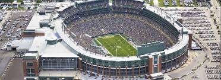
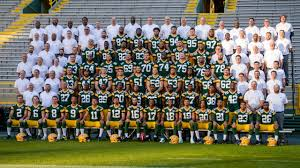

The Green Bay Packers are a professional American football team based in Green Bay, Wisconsin. The Packers compete in the National Football League (NFL) as a member club of the league's National Football Conference (NFC) North division. It is the third-oldest franchise in the NFL, dating back to 1919, and is the only non-profit, community-owned major league professional sports team based in the United States.Home games have been played at Lambeau Field since 1957.
The Packers are the last of the "small town teams" which were common in the NFL during the league's early days of the 1920s and '30s. Founded in 1919 by Earl "Curly" Lambeau and George Whitney Calhoun, the franchise traces its lineage to other semi-professional teams in Green Bay dating back to 1896. Between 1919 and 1920, the Packers competed against other semi-pro clubs from around Wisconsin and the Midwest, before joining the American Professional Football Association (APFA), the forerunner of today's NFL, in 1921. Although Green Bay is by far the smallest major league professional sports market in North America, Forbes ranked the Packers as the world's 26th most valuable sports franchise in 2016, with a value of $2.35 billion.
The Packers have won 13 league championships, the most in NFL history, with nine pre–Super Bowl NFL titles and four Super Bowl victories. The Packers won the first two Super Bowls in 1967 and 1968 and were the only NFL team to defeat the American Football League (AFL) prior to the AFL–NFL merger. The Vince Lombardi Trophy is named after the Packers' coach of the same name, who guided them to their first two Super Bowls. Their two subsequent Super Bowl wins came in 1996 and 2010.
The Packers are long-standing adversaries of the Chicago Bears, Minnesota Vikings, and Detroit Lions, who today comprise the NFL's NFC North division, and were formerly members of the NFC Central Division. They have played over 100 games against each of those teams through history, and have a winning overall record against all of them, a distinction only shared with the Kansas City Chiefs and Dallas Cowboys. The Bears–Packers rivalry is one of the oldest in NFL history, dating back to 1921.

The Packers are the only community-owned franchise in North America's four traditional major leagues. Rather than being the property of an individual, partnership, or corporate entity, they are held in 2014 by 360,584 stockholders. No one is allowed to hold more than 200,000 shares, or approximately 4% of the 5,011,557 shares currently outstanding. It is this broad-based community support and non-profit structure which has kept the team in Green Bay for nearly a century in spite of being the smallest market in all of North American professional sports.
The city of Green Bay had a population of only 104,057 as of the 2010 census, and 600,000 in its television market, significantly less than the average NFL figures. The team, however, has long had an extended fan base throughout Wisconsin and parts of the Midwest, thanks in part to playing one pre-season and three regular-season home games each year in Milwaukee through 1995. It was only when baseball-only Miller Park preempted football there that the Packers' home slate became played entirely in Green Bay.
There have been five stock sales to fund Packer operations over the team's history, beginning with $5,000 being raised through 1,000 shares offered at $5 apiece in 1923. Most recently, $64 million was raised in 2011–2012 towards a $143-million Lambeau Field expansion. Demand exceeded expectations, and the original 250,000 share limit had to be increased before some 250,000 new buyers from all 50 U.S. states and Canada purchased 269,000 shares at $250 apiece, approximately 99% online.
The original "Articles of Incorporation for the Green Bay Football Corporation", enacted in 1923, specified that should the franchise be sold, any post-expenses money would have gone to the Sullivan-Wallen Post of the American Legion to build "a proper soldier's memorial." This stipulation was included to ensure there could never be any financial inducement for shareholders to move the club from Green Bay. At the November 1997 annual meeting, shareholders voted to change the beneficiary from the Sullivan-Wallen Post to the Green Bay Packers Foundation, which makes donations to many charities and institutions throughout Wisconsin.
Even though it is referred to as "common stock" in corporate offering documents, a share of Packers stock does not share the same rights traditionally associated with common or preferred stock. It does not include an equity interest, does not pay dividends, can not be traded, has no securities-law protection, and brings no season ticket purchase privileges. All shareholders receive are voting rights, an invitation to the corporation's annual meeting, and an opportunity to purchase exclusive shareholder-only merchandise.[61] Shares of stock cannot be resold, except back to the team for a fraction of the original price. While new shares can be given as gifts, transfers are technically allowed only between immediate family members once ownership has been established.
Green Bay is the only team with this form of ownership structure in the NFL, which does not comply with current league rules stipulating a maximum of 32 owners per team, with one holding a minimum 30% stake. The Packers' corporation was grandfathered when the NFL's current ownership policy was established in the 1980s. As a publicly held nonprofit, the Packers are also the only American major-league sports franchise to release its financial balance sheet every year.